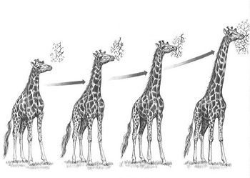

LAMARCKISMO
Entenda A TEORIA DE JEAN-BAPTISTE LAMARCK.
LAMARCKISMO
Lamarckismo é uma teoria desenvolvida pelo biólogo francês Jean-Baptiste Lamarck no começo do século XIX. Esta teoria tem como objetivo principal explicar a evolução das espécies. Lamarck publicou sua teoria no ano de 1809, no livro “Filosofia Zoológica”, sendo que ela foi de grande importância para as Ciências Biológicas, pois serviu de base para o trabalho de Charles Darwin.
Através destes dois postulados, Lamarck pretendia explicar a evolução de todas as espécies, desde o princípio da vida no planeta Terra.
Lei do uso e desuso
A lei do uso e desuso é resultado da observação de Lamarck de que certos órgãos podem se desenvolver mais se forem mais usados. Ao mesmo tempo, outros ficam atrofiados se não forem usados.Um exemplo clássico da lei do uso e desuso é sobre o pescoço das girafas. Elas teriam a necessidade de alcançar folhas mais altas nas árvores. Para isso, esticavam mais o pescoço, desenvolvendo a musculatura, levando ao seu aumento.
Lei da Transmissão dos Caracteres Adquiridos
Essa premissa complementa a primeira, do uso e desuso. Lamarck acreditava que as características adquiridas eram transmitidas de geração em geração, tornando as espécies mais adaptadas ao ambiente.Por exemplo, as girafas que aumentavam o pescoço com a necessidade de buscar folhas cada vez mais altas nas árvores, passavam essas características para os descendentes.
Assim, ao longo de sucessivas gerações, as girafas "pescoçudas" se tornavam mais adaptadas ao ambiente. 
Importância das ideias de Lamarck
Lamarck foi muito importante para o desenvolvimento das teorias evolucionistas, uma vez que naquela época, dominavam as ideias fixistas ou criacionistas. Acreditava-se, por exemplo, que o número de espécies era fixo e definido no momento da criação por Deus. As espécies eram consideradas imutáveis. No entanto, com o interesse crescente pelas ciências naturais, a observação dos fenômenos pelos naturalistas levou-os a questionar a imutabilidade das espécies.
Lamarck acertou ao analisar a importância das espécies se adaptarem ao meio em que vivem e por acreditar que os fósseis eram um registro da evolução dos seres. No entanto, suas ideias falham ao afirmar que as características adquiridas durante a vida podem ser transmitidas aos descendentes. Hoje sabemos que isso não ocorre, graças aos estudos genéticos. Essas características chamadas de fenótipos, são provocadas por fatores do ambiente e não podem ser transmitidas geneticamente.
© Produzido por: Tainá Silva e Vithória Gomes, Inc